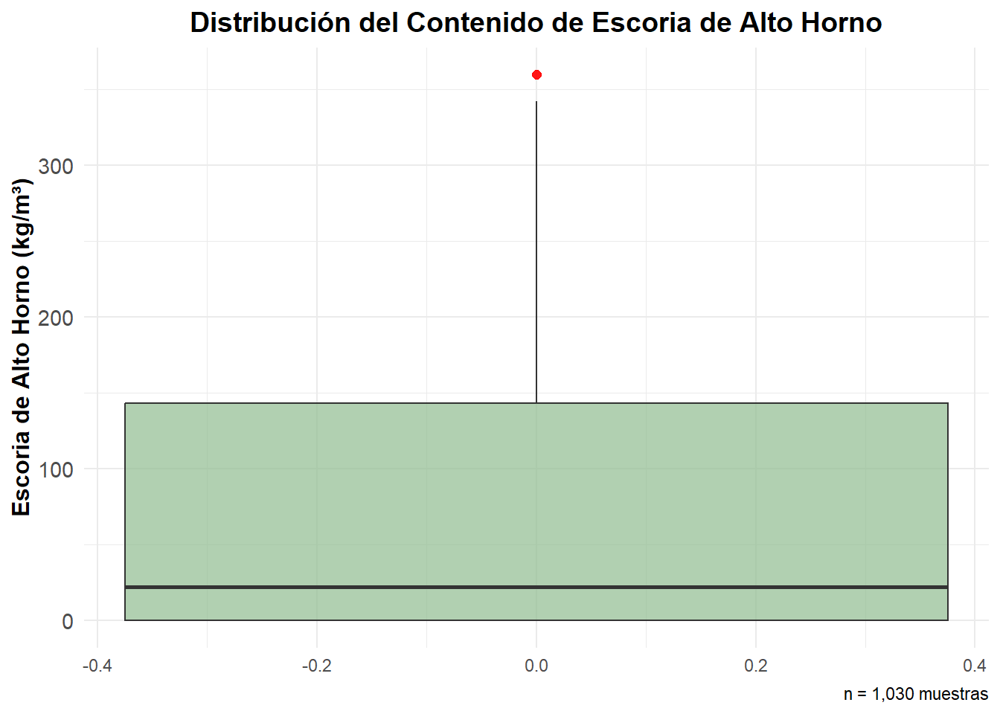
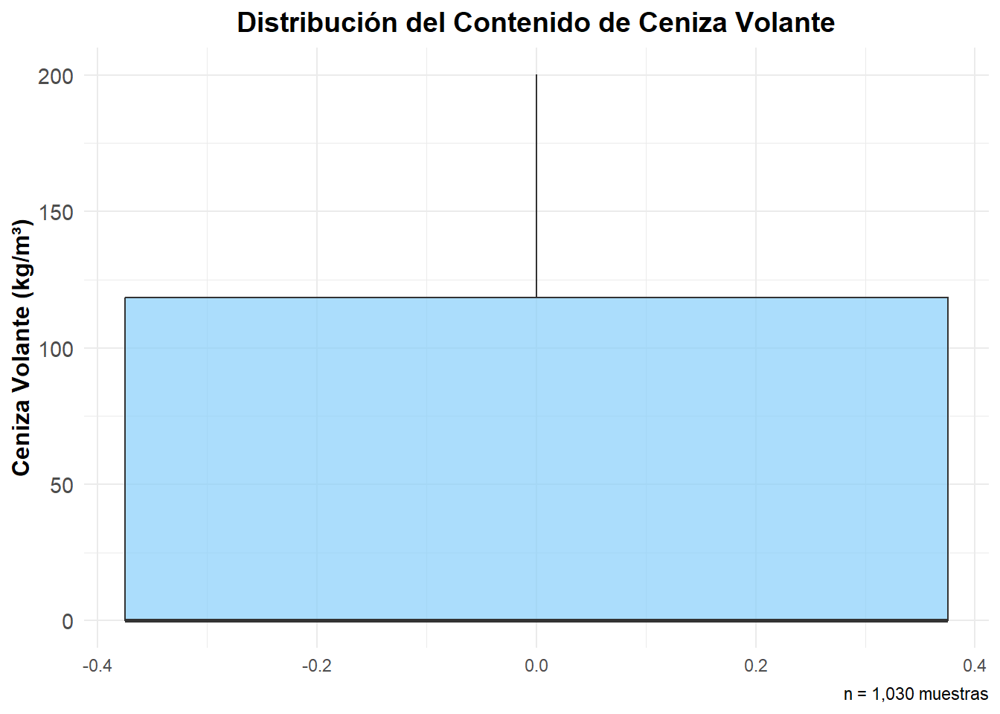
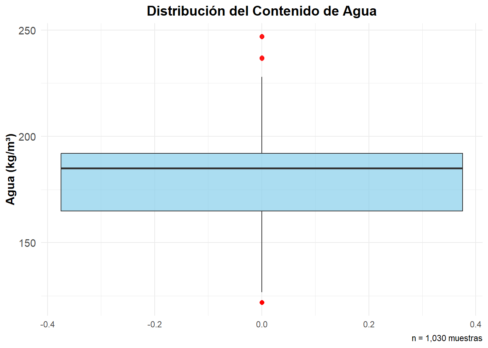
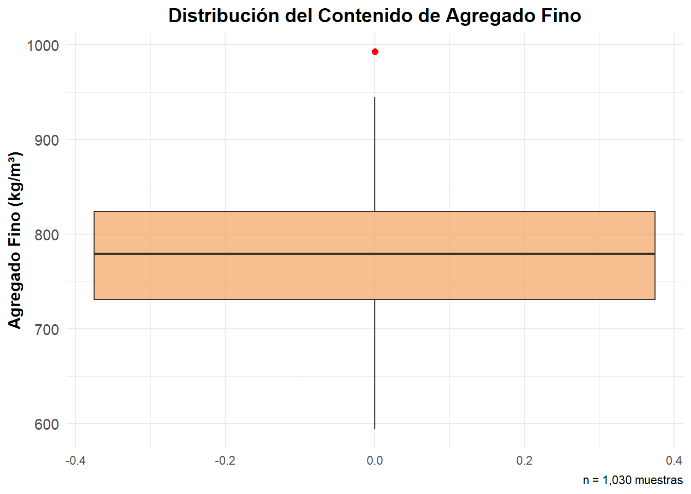
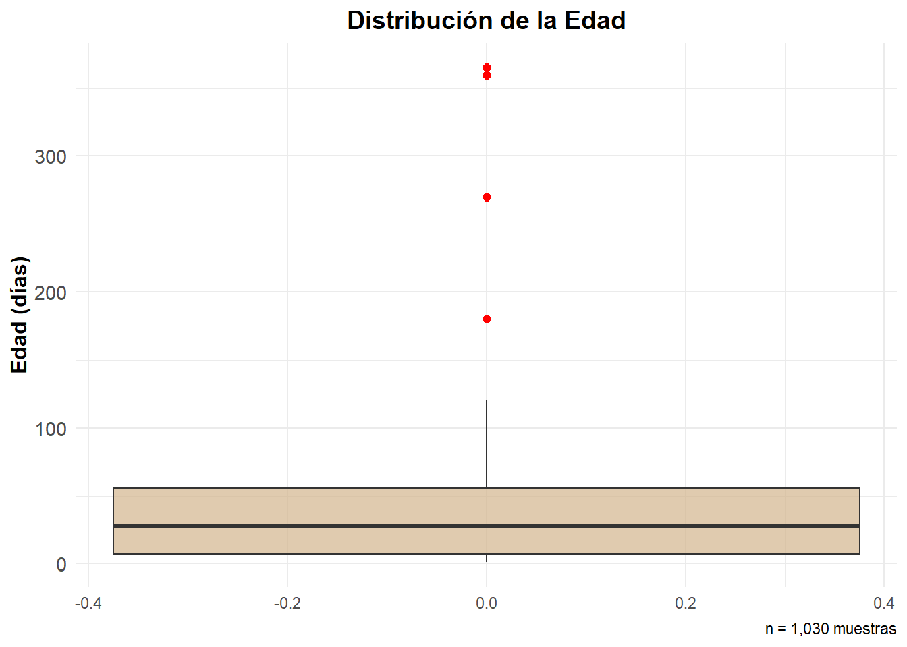

Analisis Univariante
2025-10-20
1 Analisis Univariante
1.1 Compressive Strength
Concrete %>%
summarise(
n = length(Concrete[[9]]),
media = mean(Concrete[[9]]),
ds = sd(Concrete[[9]]),
mediana = median(Concrete[[9]]),
minimo = min(Concrete[[9]]),
maximo = max(Concrete[[9]]),
Q1 = quantile(Concrete[[9]], 0.25),
Q3 = quantile(Concrete[[9]], 0.75),
IQR = IQR(Concrete[[9]])
)## n media ds mediana minimo maximo Q1 Q3 IQR
## 1 1030 35.81796 16.70574 34.445 2.33 82.6 23.71 46.135 22.425La variable Compressive Strength fue analizada a partir de 1.030 observaciones. Se obtuvo una resistencia promedio de aproximadamente 35,82 MPa (DS = 16,71 MPa), donde el 50% de las muestras presentan resistencias por debajo de 34,45 MPa. El mínimo registrado fue de 2,33 MPa, lo que indica mezclas de concreto muy jóvenes (posiblemente evaluadas a 1 día de curado) o con proporciones poco óptimas de ingredientes. Por su parte, el máximo alcanzó los 82,6 MPa, lo cual refleja mezclas de alta resistencia con composiciones especiales, mayor contenido de cemento, uso de superplastificantes y tiempos de curado prolongados (hasta 365 días según el dataset). El rango intercuartílico (IQR = 22,43 MPa) muestra una variabilidad considerable, con el primer cuartil (Q1) en 23,71 MPa y el tercer cuartil (Q3) en 46,14 MPa. Esta dispersión confirma que la resistencia del concreto está fuertemente influenciada por la combinación de factores como la dosificación de cemento, la presencia de materiales suplementarios (escoria y ceniza volante), la relación agua-cemento y, especialmente, la edad de curado.
# Histograma con curva de densidad
ggplot(Concrete, aes(x = Concrete[[9]])) +
geom_histogram(aes(y = after_stat(density)),
fill = "steelblue", color = "white", bins = 30, alpha = 0.7) +
geom_density(color = "darkred", linewidth = 1) +
labs(
title = "Distribución de la Resistencia a la Compresión del Concreto",
x = "Resistencia a la Compresión (MPa)",
y = "Densidad",
caption = "n = 1,030 muestras"
) +
theme_minimal() +
theme(
plot.title = element_text(hjust = 0.5, face = "bold", size = 14),
axis.text = element_text(size = 11),
axis.title = element_text(face = "bold", size = 12)
)## Warning: Use of `Concrete[[9]]` is discouraged.
## ℹ Use `.data[[9]]` instead.
## Use of `Concrete[[9]]` is discouraged.
## ℹ Use `.data[[9]]` instead. Se puede ver en el grafico la heterogenidad de los datos sin contar esa leve sesgo a la derecha lo que significa que las otras variables no deben estar influyendo de manera drastica en los estadísticos como la media y la desviación estándar
Se puede ver en el grafico la heterogenidad de los datos sin contar esa leve sesgo a la derecha lo que significa que las otras variables no deben estar influyendo de manera drastica en los estadísticos como la media y la desviación estándar
1.2 Cement
ggplot(Concrete, aes(y = Cement)) +
geom_boxplot(fill = "coral", alpha = 0.7, outlier.color = "red", outlier.size = 2) +
labs(
title = "Distribución del Contenido de Cemento",
y = "Cemento (kg/m³)",
caption = "n = 1,030 muestras"
) +
theme_minimal() +
theme(
plot.title = element_text(hjust = 0.5, face = "bold", size = 14),
axis.text.y = element_text(size = 11),
axis.title.y = element_text(face = "bold", size = 12)
)
Concrete %>%
summarise(
n = length(Cement),
media = mean(Cement),
ds = sd(Cement),
CV = (sd(Cement) / mean(Cement)) * 100,
mediana = median(Cement),
minimo = min(Cement),
maximo = max(Cement),
Q1 = quantile(Cement, 0.25),
Q3 = quantile(Cement, 0.75),
IQR = IQR(Cement)
)## n media ds CV mediana minimo maximo Q1 Q3 IQR
## 1 1030 281.1679 104.5064 37.16867 272.9 102 540 192.375 350 157.625La variable Cement presenta una media de 281,17 kg/m³ (DS = 104,51 kg/m³) con un coeficiente de variación del 37,17%, indicando alta variabilidad en las dosificaciones. El rango oscila entre 102 kg/m³ (mezclas con bajo cemento, posiblemente compensadas con materiales suplementarios) y 540 kg/m³ (mezclas de alta resistencia para aplicaciones estructurales exigentes). La mediana de 272,9 kg/m³ y el IQR de 157,63 kg/m³ (Q1 = 192,38; Q3 = 350) revelan una distribución relativamente simétrica con algunos valores atípicos superiores. Esta amplia variabilidad refleja la diversidad de diseños de mezcla empleados en el dataset para lograr diferentes niveles de resistencia.
1.3 Blast Furnace Slag
ggplot(Concrete, aes(y = `Blast Furnace Slag`)) +
geom_boxplot(fill = "darkseagreen", alpha = 0.7, outlier.color = "red", outlier.size = 2) +
labs(
title = "Distribución del Contenido de Escoria de Alto Horno",
y = "Escoria de Alto Horno (kg/m³)",
caption = "n = 1,030 muestras"
) +
theme_minimal() +
theme(
plot.title = element_text(hjust = 0.5, face = "bold", size = 14),
axis.text.y = element_text(size = 11),
axis.title.y = element_text(face = "bold", size = 12)
)
Concrete %>%
summarise(
n = length(`Blast Furnace Slag`),
media = mean(`Blast Furnace Slag`),
ds = sd(`Blast Furnace Slag`),
CV = (sd(`Blast Furnace Slag`) / mean(`Blast Furnace Slag`)) * 100,
mediana = median(`Blast Furnace Slag`),
minimo = min(`Blast Furnace Slag`),
maximo = max(`Blast Furnace Slag`),
Q1 = quantile(`Blast Furnace Slag`, 0.25),
Q3 = quantile(`Blast Furnace Slag`, 0.75),
IQR = IQR(`Blast Furnace Slag`)
)## n media ds CV mediana minimo maximo Q1 Q3 IQR
## 1 1030 73.89583 86.27934 116.7581 22 0 359.4 0 142.95 142.95La variable Blast Furnace Slag presenta una media de 73,90 kg/m³ (DS = 86,28 kg/m³) con un coeficiente de variación del 116,76%, indicando una variabilidad extremadamente alta. La mediana de 22 kg/m³ es considerablemente menor que la media, revelando una marcada asimetría positiva. El rango oscila entre 0 kg/m³ (mezclas sin escoria) y 359,4 kg/m³ (mezclas con alto contenido de este material suplementario). El boxplot muestra que más del 50% de las muestras contienen cantidades bajas de escoria (Q1 = 0; Q3 = 142,95 kg/m³), con un valor atípico extremo alrededor de 360 kg/m³. Esta alta variabilidad refleja que la escoria es un ingrediente opcional utilizado selectivamente para mejorar propiedades específicas del concreto o reducir costos.
1.4 Fly Ash
ggplot(Concrete, aes(y = `Fly Ash`)) +
geom_boxplot(fill = "lightskyblue", alpha = 0.7, outlier.color = "red", outlier.size = 2) +
labs(
title = "Distribución del Contenido de Ceniza Volante",
y = "Ceniza Volante (kg/m³)",
caption = "n = 1,030 muestras"
) +
theme_minimal() +
theme(
plot.title = element_text(hjust = 0.5, face = "bold", size = 14),
axis.text.y = element_text(size = 11),
axis.title.y = element_text(face = "bold", size = 12)
)
Concrete %>%
summarise(
n = length(`Fly Ash`),
media = mean(`Fly Ash`),
ds = sd(`Fly Ash`),
CV = (sd(`Fly Ash`) / mean(`Fly Ash`)) * 100,
mediana = median(`Fly Ash`),
minimo = min(`Fly Ash`),
maximo = max(`Fly Ash`),
Q1 = quantile(`Fly Ash`, 0.25),
Q3 = quantile(`Fly Ash`, 0.75),
IQR = IQR(`Fly Ash`)
)## n media ds CV mediana minimo maximo Q1 Q3 IQR
## 1 1030 54.18835 63.997 118.101 0 0 200.1 0 118.3 118.3La variable Fly Ash presenta una media de 54,19 kg/m³ (DS = 64,00 kg/m³) con un coeficiente de variación del 118,10%, indicando una variabilidad extremadamente alta similar a la escoria. La mediana de 0 kg/m³ revela que al menos el 50% de las muestras no contienen ceniza volante, confirmando una marcada asimetría positiva. El rango oscila entre 0 kg/m³ (mezclas sin ceniza) y 200,1 kg/m³ (mezclas con alto contenido de este material puzolánico). El boxplot muestra que el 75% de las muestras tienen valores entre 0 y 118,3 kg/m³ (Q3), con un valor atípico alrededor de 200 kg/m³. Esta distribución indica que la ceniza volante, al igual que la escoria, es un ingrediente opcional utilizado selectivamente como material cementante suplementario para mejorar la durabilidad o reducir el costo del concreto.
ggplot(Concrete, aes(y = Water)) +
geom_boxplot(fill = "skyblue", alpha = 0.7, outlier.color = "red", outlier.size = 2) +
labs(
title = "Distribución del Contenido de Agua",
y = "Agua (kg/m³)",
caption = "n = 1,030 muestras"
) +
theme_minimal() +
theme(
plot.title = element_text(hjust = 0.5, face = "bold", size = 14),
axis.text.y = element_text(size = 11),
axis.title.y = element_text(face = "bold", size = 12)
)
Concrete %>%
summarise(
n = length(Water),
media = mean(Water),
ds = sd(Water),
CV = (sd(Water) / mean(Water)) * 100,
mediana = median(Water),
minimo = min(Water),
maximo = max(Water),
Q1 = quantile(Water, 0.25),
Q3 = quantile(Water, 0.75),
IQR = IQR(Water)
)## n media ds CV mediana minimo maximo Q1 Q3 IQR
## 1 1030 181.5673 21.35422 11.76105 185 121.8 247 164.9 192 27.1La variable Water presenta una media de 181,57 kg/m³ (DS = 21,35 kg/m³) con un coeficiente de variación del 11,76%, indicando baja variabilidad en comparación con otras variables. La mediana de 185 kg/m³ es cercana a la media, sugiriendo una distribución relativamente simétrica. El rango oscila entre 121,8 kg/m³ y 247 kg/m³, con un IQR reducido de 27,1 kg/m³ (Q1 = 164,9; Q3 = 192). El boxplot muestra algunos valores atípicos tanto superiores como inferiores, representando mezclas con relaciones agua-cemento extremas. Esta baja variabilidad refleja que el contenido de agua es un parámetro más controlado en el diseño de mezclas, ya que la relación agua-cemento es crítica para determinar la trabajabilidad y resistencia del concreto.
ggplot(Concrete, aes(y = Superplasticizer)) +
geom_boxplot(fill = "plum", alpha = 0.7, outlier.color = "red", outlier.size = 2) +
labs(
title = "Distribución del Contenido de Superplastificante",
y = "Superplastificante (kg/m³)",
caption = "n = 1,030 muestras"
) +
theme_minimal() +
theme(
plot.title = element_text(hjust = 0.5, face = "bold", size = 14),
axis.text.y = element_text(size = 11),
axis.title.y = element_text(face = "bold", size = 12)
)
Concrete %>%
summarise(
n = length(Superplasticizer),
media = mean(Superplasticizer),
ds = sd(Superplasticizer),
CV = (sd(Superplasticizer) / mean(Superplasticizer)) * 100,
mediana = median(Superplasticizer),
minimo = min(Superplasticizer),
maximo = max(Superplasticizer),
Q1 = quantile(Superplasticizer, 0.25),
Q3 = quantile(Superplasticizer, 0.75),
IQR = IQR(Superplasticizer)
)## n media ds CV mediana minimo maximo Q1 Q3 IQR
## 1 1030 6.20466 5.973841 96.27991 6.4 0 32.2 0 10.2 10.2La variable Superplasticizer presenta una media de 6,20 kg/m³ (DS = 5,97 kg/m³) con un coeficiente de variación del 96,28%, indicando una variabilidad extremadamente alta. La mediana de 6,4 kg/m³ es cercana a la media, pero el mínimo de 0 kg/m³ revela que muchas mezclas no contienen este aditivo. El rango oscila entre 0 y 32,2 kg/m³, con un IQR de 10,2 kg/m³ (Q1 = 0; Q3 = 10,2). El boxplot muestra valores atípicos superiores alrededor de 28-32 kg/m³, representando mezclas de alto desempeño que requieren mayor fluidez. Esta distribución indica que el superplastificante es un aditivo químico opcional utilizado principalmente para mejorar la trabajabilidad del concreto sin aumentar el contenido de agua, siendo más común en mezclas de alta resistencia.
1.5 Coarse Aggregate
ggplot(Concrete, aes(y = `Coarse Aggregate`)) +
geom_boxplot(fill = "tan", alpha = 0.7, outlier.color = "red", outlier.size = 2) +
labs(
title = "Distribución del Contenido de Agregado Grueso",
y = "Agregado Grueso (kg/m³)",
caption = "n = 1,030 muestras"
) +
theme_minimal() +
theme(
plot.title = element_text(hjust = 0.5, face = "bold", size = 14),
axis.text.y = element_text(size = 11),
axis.title.y = element_text(face = "bold", size = 12)
)
Concrete %>%
summarise(
n = length(`Coarse Aggregate`),
media = mean(`Coarse Aggregate`),
ds = sd(`Coarse Aggregate`),
CV = (sd(`Coarse Aggregate`) / mean(`Coarse Aggregate`)) * 100,
mediana = median(`Coarse Aggregate`),
minimo = min(`Coarse Aggregate`),
maximo = max(`Coarse Aggregate`),
Q1 = quantile(`Coarse Aggregate`, 0.25),
Q3 = quantile(`Coarse Aggregate`, 0.75),
IQR = IQR(`Coarse Aggregate`)
)## n media ds CV mediana minimo maximo Q1 Q3 IQR
## 1 1030 972.9189 77.75395 7.991822 968 801 1145 932 1029.4 97.4La variable Coarse Aggregate presenta una media de 972,92 kg/m³ (DS = 77,75 kg/m³) con un coeficiente de variación del 7,99%, indicando muy baja variabilidad. La mediana de 968 kg/m³ es prácticamente igual a la media, confirmando una distribución simétrica. El rango oscila entre 801 y 1145 kg/m³, con un IQR muy reducido de 97,4 kg/m³ (Q1 = 932; Q3 = 1029,4). El boxplot muestra ausencia de valores atípicos y una distribución muy compacta. Esta baja variabilidad refleja que el agregado grueso (grava) es un componente estructural esencial presente en cantidades relativamente constantes en todas las mezclas de concreto, representando típicamente el mayor volumen dentro de la composición y siendo crucial para la integridad estructural del material.
1.6 Fine Aggregate
ggplot(Concrete, aes(y = `Fine Aggregate`)) +
geom_boxplot(fill = "sandybrown", alpha = 0.7, outlier.color = "red", outlier.size = 2) +
labs(
title = "Distribución del Contenido de Agregado Fino",
y = "Agregado Fino (kg/m³)",
caption = "n = 1,030 muestras"
) +
theme_minimal() +
theme(
plot.title = element_text(hjust = 0.5, face = "bold", size = 14),
axis.text.y = element_text(size = 11),
axis.title.y = element_text(face = "bold", size = 12)
)
Concrete %>%
summarise(
n = length(`Fine Aggregate`),
media = mean(`Fine Aggregate`),
ds = sd(`Fine Aggregate`),
CV = (sd(`Fine Aggregate`) / mean(`Fine Aggregate`)) * 100,
mediana = median(`Fine Aggregate`),
minimo = min(`Fine Aggregate`),
maximo = max(`Fine Aggregate`),
Q1 = quantile(`Fine Aggregate`, 0.25),
Q3 = quantile(`Fine Aggregate`, 0.75),
IQR = IQR(`Fine Aggregate`)
)## n media ds CV mediana minimo maximo Q1 Q3 IQR
## 1 1030 773.5805 80.17598 10.36427 779.5 594 992.6 730.95 824 93.05La variable Fine Aggregate presenta una media de 773,58 kg/m³ (DS = 80,18 kg/m³) con un coeficiente de variación del 10,36%, indicando baja variabilidad similar al agregado grueso. La mediana de 779,5 kg/m³ es cercana a la media, sugiriendo una distribución relativamente simétrica. El rango oscila entre 594 y 992,6 kg/m³, con un IQR de 93,05 kg/m³ (Q1 = 730,95; Q3 = 824). El boxplot muestra un valor atípico superior alrededor de 990 kg/m³, representando una mezcla con contenido excepcionalmente alto de arena. Esta baja variabilidad refleja que el agregado fino (arena) es otro componente estructural esencial presente en cantidades relativamente controladas en las mezclas de concreto, siendo fundamental para llenar los espacios vacíos entre el agregado grueso y lograr una matriz densa y trabajable.
1.7 Age
ggplot(Concrete, aes(y = Age)) +
geom_boxplot(fill = "tan", alpha = 0.7, outlier.color = "red", outlier.size = 2) +
labs(
title = "Distribución de la Edad",
y = "Edad (días)",
caption = "n = 1,030 muestras"
) +
theme_minimal() +
theme(
plot.title = element_text(hjust = 0.5, face = "bold", size = 14),
axis.text.y = element_text(size = 11),
axis.title.y = element_text(face = "bold", size = 12)
)
Concrete %>%
summarise(
n = length(Age),
media = mean(Age),
ds = sd(Age),
CV = (sd(Age) / mean(Age)) * 100,
mediana = median(Age),
minimo = min(Age),
maximo = max(Age),
Q1 = quantile(Age, 0.25),
Q3 = quantile(Age, 0.75),
IQR = IQR(Age)
)## n media ds CV mediana minimo maximo Q1 Q3 IQR
## 1 1030 45.66214 63.16991 138.342 28 1 365 7 56 49La edad del concreto en este estudio muestra una distribución altamente asimétrica, con el 75% de las muestras concentradas en 56 días o menos (mediana de 28 días) y un coeficiente de variación del 138% que indica gran dispersión. Se identifican tres valores atípicos excepcionales (180, 270 y 365 días). Esta distribución es estratégica porque el concreto desarrolla la mayor parte de su resistencia en los primeros 28 días, aunque las muestras de mayor edad son valiosas para evaluar el comportamiento a largo plazo. La edad será probablemente un predictor clave de la resistencia a la compresión, con una relación positiva esperada donde a mayor edad, mayor resistencia.